자연생태복원산업기사 (2020-08-22 기출문제)
1과목: 환경생태학개론
1. 다음 [보기]에 해당하는 생물로 가장 적절한 것은?
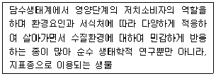
- 어류
- 녹조류
- 수서곤충
- 동물플랑크톤
(정답률: 32%)

2. 먹이사슬 (food chain)에 대한 설명 중 옳은 것은?
- 한 단계의 사슬을 거칠 때마다 약 80%의 에너지가 획득되어진다.
- 먹이사슬이 지속될수록 엔트로피가 증가되면서 이용 가능한 에너지가 점점 늘어난다.
- 먹이사슬은 독립적이며 DDT와 같은 독성물질은 영양단계가 높아짐에 따라 감소하는 경향이 있다.
- 생물간의 먹고 먹히는 관계를 표현한 것으로, 실제로는 복잡한 망상구조를 나타내어 먹이망이라고도 한다.
(정답률: 67%)
3. 가정하수 또는 폐수가 호수에 유입되었을 때 발생하는 현상으로 가장 적절한 것은?
- 호기성 미생물의 번식에 의하여 산소량이 감소되고, 그 뒤에 혐기성 미생물이 번식하기 시작한다.
- 혐기성 미생물이 번식하다가 호기성 미생물이 번식하여 수질을 개선하므로 생물의 생육에는 좋을 수 있다.
- 혐기성 미생물의 영향으로 수생식물의 생육이 촉진되므로 식물의 이용도를 높일 수 있다.
- 미생물과 상관없이 수질이 악화되는 현상을 보이지만, 식물 또는 어패류의 번식에는 아무런 관계가 없다.
(정답률: 54%)
4. 생물종의 멸종을 방지하고 종 보전을 위해서 취하는 접근 방법이 아닌 것은?
- 정부의 종 보전에 관한 적극적인 지원정책이 필요하다.
- 연구 및 교육기관에서의 지속적인 연구와 전문인력의 양성이 요구되어 진다.
- 토착 자생종의 보전 및 방제를 위해 화학물질이 아닌 외부의 생물을 도입한다.
- 일반 국민들에 의한 지역적, 국가적 그리고 세계적인 수준에서의 멸종위기종과 희귀종 보전에 대한 적극적인 활동이 필요하다.
(정답률: 71%)
5. 생태계에서는 공간, 먹이, 증식 등에 대하여 서식 생물들간에 종간경쟁과 종내경쟁이 일어난다. 그 결과로 나타나는 특정 개체군의 2가지 기본형 생장곡선은 무엇인가?
- J자형, S자형
- S자형, I자형
- J자형, L자형
- S자형, L자형
(정답률: 27%)
6. 생태계 복원의 궁극적인 목적으로 가장 적절한 것은?
- 경관 개선
- 지반 안정
- 수질 정화
- 생물 종 다양성 확대
(정답률: 79%)
7. 다음 [보기]의 분류군 중 오염물질에 대한 농축정도가 가장 높은 분류군은?
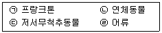
- ㉠
- ㉡
- ㉢
- ㉣
(정답률: 62%)
8. 생물들의 상호작용에서 두 종간에 서로 도움을 주면서 살아가는 방식은?
- 기생
- 경쟁
- 상리공생
- 편리공생
(정답률: 69%)
9. 생태계가 항상성을 유지하는데 중요한 요소는?
- 교란력, 회복력
- 생산력, 저항력
- 회복력, 저항력
- 활동력, 회복력
(정답률: 62%)
10. 빈영양호와 부영양호에 대한 설명으로 가장 거리가 먼 것은?
- 부영양호에는 유기물의 양이 많다.
- 부영양호에는 빈영양호보다 생물의 개체수가 많지 않다.
- 빈영양호에는 저서생물의 종류가 부영양호보다 다양하다.
- 여름에 호소를 연녹색으로 물들이는 남조류는 부영양화의 지표종이다.
(정답률: 36%)
11. [보기]의 생태적 계층구조 중 상대적으로 가장 큰 단위는?
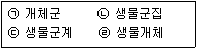
- ㉠
- ㉡
- ㉢
- ㉣
(정답률: 38%)
12. 생물의 밀도 측정법이 아닌 것은?
- 방형구법
- 비구획법
- 전수조사법
- 방사선동위원소이용법
(정답률: 48%)
13. 다음 중 식물의 군집이 어떤 환경에서 방향성을 가지고 순차적으로 변화하는 것을 의미하는 용어는?
- 개체군 분산
- 개체군 변이
- 생태학적 천이
- 생물 번식 잠재력
(정답률: 67%)
14. 열대와 아열대지역의 해안 점이대에 형성되는 군집으로 옳게 짝지어진 것은?
- 툰드라, 타이거
- 맹그로브, 산호초
- 에스추어리, 채퍼렐
- 범람원, 해저열수층
(정답률: 43%)
15. 토성 및 입자의 지름 범위가 옳게 짝지어진 것은? (단, 미국농무성(USDA) 기준에 따른다.)
- 자갈 : 0.0001~0.001mm
- 점토 : 0.001~0.02mm
- 미사 : 0.02~0.⑤mm
- 모래 : 0.⑤~2mm
(정답률: 36%)
16. 생태계 구성요소 중 나머지와 다른 하나는?
- 생산자
- 소비자
- 분해자
- 유기화합물
(정답률: 71%)
17. 생태계 군집이 갖는 속성으로 틀린 것은?
- 생활형
- 층위구조
- 먹이사슬
- 종조성 및 다양성
(정답률: 60%)
18. 해안가의 수계로서 해수와 담수가 합쳐지는 부분은?
- 사구
- 하구
- 대륙붕
- 갯벌해안
(정답률: 50%)
19. 살충제가 생태계에 미치는 영향에 대한 설명으로 가장 거리가 먼 것은?
- 지속성 살충제는 물과 공기를 통해 멀리 확산된다.
- 대부분의 살충제는 원하는 해충만 죽여야되나 여러 종류의 동물도 죽인다.
- DDT, 알드린, 린덴, 마라치온 같은 일부 살충제는 인체 내에 축적되어 있다.
- 해충은 진화가 잘 일어나지 않아서 살충제에 대한 저항성이 잘 생기기 않는다.
(정답률: 67%)
20. 생태계의 기능에 대한 설명으로 옳은 것은?
- 생태계 내에서 원형질의 모든 원소를 포함한 화학적 원소는 일방적으로 흘러간다.
- 생태계의 에너지 회로는 살아있는 식물을 직접 소비하는 초식회로만 존재한다.
- 생태계는 스스로 자신의 체계를 제어할 수 있는 능력을 가지고 있지 못하다.
- 생태계는 생물적·비생물적 구성요소의 상호작용에 의해 물질순환과 에너지 흐름이 일어난다.
(정답률: 73%)
2과목: 환경학개론
21. 각 영양단계마다 에너지 효율이 8%라고 가정했을 때 풀 1000kg으로 2차 소비자(예:개구리) 몇 kg을 부양할 수 있는가?
- 6.4
- 8.2
- 12.4
- 32.0
(정답률: 32%)
22. 각종 개발 사업 시 습지 관리에 대한 정책 과정에서 가장 우선해야 하는 것은?
- 습지의 훼손을 피하도록 한다.
- 습지의 훼손을 최소화한다.
- 습지의 훼손을 보상해 준다.
- 습지의 훼손을 대체시켜준다.
(정답률: 19%)
23. 다음 [보기]의 설명에 적합한 생물 군계는?
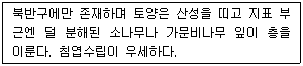
- 툰드라
- 타이가
- 온대우림
- 온대활엽수림
(정답률: 43%)
24. 도시생태계의 생태환경적 일반특성이 나타나게된 요인에 대한 설명으로가장 거리가 먼 것은?
- 도시 내 녹지 네트워크가 매우 불량하다.
- 대기오염물질 및 쓰레기 등에 의한 서식처의 질적 쇠퇴가 일어난다.
- 도심의 녹지공간은 접근성 문제로 외래식물의 출현율이 매우 낮다.
- 지표면이 토양이나 수면과 같이 자연상태로 노출된 공간의 수와 면적이 크게 부족하다.
(정답률: 29%)
25. 도시 생태·복지 네트워크의 계획과정의 설명으로 가장 거리가 먼 것은?
- 비오톱은 도시 생태계획에서는 무의미하다.
- 최종적으로 도시생태 네트워크 계획도를 작성한다.
- 자연환경과 사회환경의 평가가 모두 시행되어야 한다.
- 조사→해석→평가→과제정리→계획의 순서로 진행 된다.
(정답률: 50%)
26. 생물 종과 군집 보호를 위한 우선순위 설정의 기준으로 가장 거리가 먼 것은?
- 유용성(utility)
- 회전율(turnover rate)
- 차별성(distinctiveness)
- 위험성(endangerment)
(정답률: 27%)
27. 다음 [보기]가 설명하는 지역으로 가장 적합한 것은?
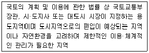
- 시설보호지역
- 생산관리지역
- 보전관리지역
- 계획관리지역
(정답률: 23%)
28. 지속 가능한 발전 개념을 바탕으로 한 생태계의 보전목적으로 가장 거리가 먼 것은?
- 야생생물 군집과 자연적 지형의 특징을 유지한다.
- 자연환경 보전을 위한 책무와 국제적인 책임을 충족한다.
- 새롭게 변화되고 있는 환경에 맞게 야생생물 개체군을 유지한다.
- 희귀 및 멸종위기 생물종의 개체군이 존속할 수 있도록 유지한다.
(정답률: 25%)
29. 습지보전법상 습지에 대한 습지보호지역 및 습지주변관리지역 지정에 해당하지 않는 지역은?
- 특이한 경관적, 지형적 또는 지질학적 가치를 지닌 지역
- 희귀하거나 멸종위기에 처한 야생 동식물이 서식하거나 나타나는 지역
- 자연 상태가 원시성을 유지하고 있거나 생물다양성이 풍부한 지역
- 문화재 또는 역사적 유물이 있으며, 자연경관과 조화되어 보존의 가치가 있는 지역
(정답률: 45%)
30. 해안매립지를 활용한 공단조성의 녹화 계획시 고려해야 할 사항과 가장 거리가 먼 것은?
- 방풍림의 조성
- 염분제거를 위한 식재기반 조성
- 인공경량토를 활용한 식재기반 조성
- 인근 해안 및 도서지방의 자생수종 도입
(정답률: 24%)
31. 지속가능도시의 바탕이 되는 생태도시의 모든 측면에 적용되는 생태적 원칙에 해당하지 않는 것은?
- 다양성
- 자립성
- 순환성
- 위계성
(정답률: 38%)
32. 환경을 구성하는 식생형을 결정하는 가장 중요한 요인으로 옳은 것은?
- 지형
- 기후
- 모암
- 위도
(정답률: 32%)
33. 도시환경적 측면에서의 비오톱의 가치에 대한 설명으로 가장 거리가 먼 것은?
- 도시 내 식물은 지구적 차원에서 ‘지구온난화’를 억제하는데 기여 한다.
- 도시 내 녹지공간은 매력적인 도시경관을 제공하는데 중요한 역할을 한다.
- 도시지역은 많은 외부도입종이 서식하는 종다양성을 가지고 있어서 연구의 대상이 된다.
- 도시 내 비오톱과 같은 녹지공간은 오염과 먼지 등의 감소 효과를 가져와 지역 환경을 개선할 수 있다.
(정답률: 46%)
34. 다음 [보기]가 설명하는 것은?
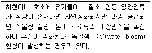
- 자정작용
- 먹이연쇄
- 부영양화 현상
- 생물학적 농축 현상
(정답률: 40%)
35. 일차천이(primary succession)에 관한 설명 중 옳은 것은?
- 최초의 군집은 선구군집이라 한다.
- 1~2년 정도 소요된다.
- 토양이 존재한 상태에서의 천이과정이다.
- 생물 종이 이미 형성된 곳에서의 종의 구성변화이다.
(정답률: 42%)
36. 주요 육상 생태계 중 평균 1차 순생산(Net Primary Productivity)이 가장 높은 지역은?
- 툰드라
- 사바나
- 열대우림
- 온대 초지
(정답률: 22%)
37. 이타이이타이병을 일으키는 금속물질로 옳은 것은?
- 수은
- 니켈
- 칼슘
- 카드뮴
(정답률: 14%)
38. 다음 중 야생동물 보호 및 관리에 관한 법률상 야생생물 특별보호구역에 대한 설명으로 옳지 않은 것은?
- 토석의 부분적 채취는 가능하다.
- 건축물 그 밖의 공작물의 신축·증축은 허용되지 않는다.
- 멸종위기 야생생물의 보호 및 번식을 위하여 특별히 보전할 필요가 있는 지역에 대하여 지정한다.
- 하천, 호소 등의 구조를 변경하거나 수위 또는 수량에 변동을 가져오는 행위는 허용되지 않는다.
(정답률: 44%)
39. 자연환경복원을 위한 계획 수립 단계에서 기본적인 고려사항으로 옳지 않은 것은?
- 외래종과 바람직하지 않은 종을 조절한다.
- 대상지역에 대한 목표종을 신중히 선택한다.
- 복원계획의 목표와 방법을 명확히 규정한다.
- 재료나 구성, 생물종은 원거리에서 도입한다.
(정답률: 39%)
40. 환경정책기본법상 환경보전 목표의 설정과 이의 달성을 위한 국가환경종합계획에 포함되지 않는 내용은?
- 지역 주민참여에 관한 사항
- 국토환경의 보전에 관한 사항
- 방사능오염물질의 관리에 관한 사항
- 생물다양성·생태계·경관 등 자연환경의 보전에 관한 사항
(정답률: 15%)
3과목: 생태복원공학
41. 다음 [보기]에서 설명하는 환경 포텐셜의 유형은?
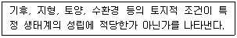
- 종의 공급 포텐셜
- 입지 포텐셜
- 종간관계 포텐셜
- 천이 포텐셜
(정답률: 30%)
42. 잠재자연식생의 설명으로 가장 적당한 것은?
- 잠재자연식생은 훼손되기 이전의 원래의 식생을 말한다.
- 잠재자연식생은 생태적인 입지환경이 크게 변하여도 추정하는데 어려움이 없다.
- 잠재자연식생은 녹화공사 시 고려대상이 될 수 없다.
- 잠재자연식생은 어떤 녹화공사 대상지에 가해진 인공적인 요인을 제거하였을 때 그 장소에서 확보되는 자연식생을 말한다.
(정답률: 36%)
43. 생태계 복원을 위한 시행절차 중 가장 마지막 단계에서 수행되어야 하는 것은?
- 복원계획의 작성
- 복원목적의 설정
- 대상지역의 여건분석
- 시행, 관리, 모니터링의 실시
(정답률: 38%)
44. 식물의 종자번식과 영양번식의 설명으로 옳은 것은?
- 영양번식은 유전적 다양성을 가지게 하고자 할 때 유용하다.
- 종자번식 개체는 종자로부터 증식하기 때문에 영양번식 개체에 비해 성장이 느리다.
- 영양번식은 부모개체의 일부에서 자식개체가 생기는 유성생식이며 유전적 조직 구성이 부모와 다르다.
- 종자번식은 모체인 부모로부터 영양분을 흡수할 수 있어 영양번식보다 다음 세대에 살아남을 확률이 크다.
(정답률: 36%)
45. 다음 중 자연생태복원의 대상인 생물다양성의 유형과 가장 거리가 먼 것은?
- 유전자의 다양성
- 생물종의 다양성
- 생태계의 다양성
- 암석의 다양성
(정답률: 44%)
46. 어떤 한 종이 얼마나 넓은 지역에 걸쳐 출현하는가 하는 생육의 분포정도를 측정하는 기준은?
- 빈도
- 피도
- 밀도
- 수도
(정답률: 27%)
47. 다음 표는 산지 1ha당 경사도별 단끊기 시공 연장표이다. ( )안에 알맞은 계단 연장(m)은? (단, 1ha는 가로 100m, 세로 100m이다.)
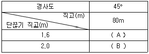
- A:5000, B:4000
- A:4000, B:5000
- A:4000, B:2000
- A:2000, B:4000
(정답률: 30%)
48. 다음 토양의 종류 중 양이온 치환용량이 가장 큰 것은?
- 기브사이트(Gibbsite)
- 카올리나이트(Kaolinite)
- 버미큘라이트(Vermiculite)
- 메타하로이사이트(Meta-halloysite)
(정답률: 32%)
49. 다음 생태 숲 조성 과정 중 가장 우선적으로 고려되어야 할 내용으로 옳은 것은?
- 종 다양성 분석
- 천이진행단계 조사
- 식생군락 모델 선정
- 주변지역의 식생구조 특성 파악
(정답률: 25%)
50. 다음 중 일반적인 천이이론에 대한 설명으로 옳지 않은 것은?
- 천이란 시간의 흐름에 따라 식물군집의 변화를 나타낸다.
- 천이가 진행되어감에 따라 종구성과 군집구조도 변화하게 된다.
- 생태적 복원에 있어 중요한 이론이며, 복원을 위한 식재설계기법에 유용하다.
- 복원 후에 천이가 자연스럽게 일어나므로 바람직한 관리방향을 제시하는 데에는 관계가 없다.
(정답률: 48%)
51. 다음 중 유기질 토양개량재의 설명으로 옳지 않은 것은?
- 퇴비계의 자재가 대부분을 차지한다.
- 동·식물의 잔해나 가축분 등이 원자재가 된다.
- 부식산질 자재, 조개껍질 등이 여기에 속한다.
- 암석이나 점토 등의 소성가공품과 광석분쇄석의 2종류가 있다.
(정답률: 32%)
52. 야생동물을 관찰하는 공간 계획 시 고려해야할 동물과 인간과의 거리에 대한 설명으로 옳지 않은 것은?
- 도피거리란 인간이 접근함에 따라 단숨에 장거리를 날아가면서 도피를 시작하는 거리
- 임계거리란 인간이 접근함에 따라 인간과의 일정한 거리를 유지하려고 하는 거리를 말한다.
- 경계거리란 인간의 존재에 대하여 경계를 취하나 그 장소로부터 이동하는 행동은 취하고 있지 않는 상태이다.
- 비간섭 거리란 조류가 인간의 모습을 알아차리면서 달아나거나 경계의 자세를 취하는 일없이 모이를 계속해 먹거나 휴식을 계속할 수 있는 거리를 말한다.
(정답률: 30%)
53. 다음 [보기]가 설명하는 생태적 복원공법으로 옳은 것은?
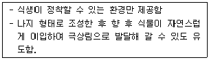
- Nucleation
- Colonization
- Naturelization
- Natural Regeneration
(정답률: 25%)
54. 다음 중 생태통로의 유형에 해당되지 않는 것은?
- 터널형 통로
- 육교형 통로
- 교차형 통로
- 파이프형 통로(양서파충류 통로)
(정답률: 48%)
55. 생물학적 표본추출법에 의한 생태측정값이 아닌 것은?
- 우점도
- 균등도
- 종다양도
- 녹지자연도
(정답률: 34%)
56. 다음 중 식재지반이 갖추어야 할 물리적 요건으로 옳지 않은 것은?
- 유효수분
- 유효토층
- 토양경도
- 토양산도
(정답률: 27%)
57. 토양에서 부식질의 역할에 대한 설명으로 옳지 않은 것은?
- 부신질은 토양의 단립화를 저해한다.
- 각종 토양반응에 대한 완충능력을 좋게 한다.
- 유익한 토양 동물을 비롯하여 미생물 활동을 활발하게 한다.
- 부식질은 분해되어 질소 또는 그 밖의 양분원소를 다량 방출한다.
(정답률: 36%)
58. 다음 중 곤충류 서식처 조성을 위한 다공질 공간 조성기법이 아닌 것은?
- 통나무 쌓기
- 돌무더기 놓기
- 나뭇가지 더미 놓기
- 생울타리 조성하기
(정답률: 40%)
59. 다음 토성구분 3각도에서 모래함량 30%, 점토함량 40%, 실트함량 30%에 해당하는 토성은?
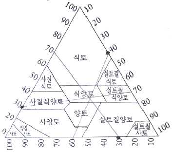
- 식토
- 식양토
- 사질식양토
- 실트질양토
(정답률: 34%)
60. 배수로를 통과하는 유량이 20m3/s이고, 배수로를 흐르는 물의 평균유속이 5m/s일 때 유로 단면적(m2)은?
- 0.4
- 2.5
- 4
- 25
(정답률: 45%)
4과목: 생태조사방법론
61. 채집된 식물플랑크톤의 표본을 현미경으로 관찰위해 임시로(수일~수개월) 보관할 때 사용할 수 있는 용액으로 가장 적절한 것은?
- 70% ethanol
- 70% FAA 용액
- 0.3% Lugol 용액
- 100% Formalin 용액
(정답률: 8%)
62. 생태계의 대기환경 요인조사에 대한 설명으로 옳지 않은 것은?
- 기온은 흔히 봉상온도계로 측정한다.
- 눈에 의한 강수량 측정은 중량측정형 우량계로 할 수 있다.
- 풍량풍속계는 평탄한 곳에 지상 10m 높이에 설치하여 측정한다.
- 지표면에 도달하는 햇빛은 직달일사계를 이용하여 직반사 및 산란광을 측정한다.
(정답률: 16%)
63. 생태조사는 조사의 목적과 대상에 따라 조사하는 빈도를 달리할 수 있다. 생물상 조사 빈도의 고려사항으로 가장 중요한 사항은?
- 조사지역의 크기
- 조사 방법의 다양성
- 조사에 쓸 수 있는 예산
- 조사 생물종의 출현 시기
(정답률: 38%)
64. 식물의 광합성에 이용되는 가시광선의 파장범위로 가장 적합한 것은?
- 1~110nm
- 120~380nm
- 390~710nm
- 720~1000nm
(정답률: 32%)
65. 피식자가 피식되는 위험을 최소화하기 위한 방법이 아닌 것은?
- 회피반응
- 집단행동
- 방위(防衛)
- 공격형 의태
(정답률: 19%)
66. Braun-Blanquet의 우점도 계급에서 판정기준이 “표본구 면적의 1/2~3/4을 덮고, 개체수는 임의인 경우”에 해당하는 우점도 계급은?
- 2
- 3
- 4
- 5
(정답률: 32%)
67. 종간 상호작용 중 편리공생(commensalism)에 해당하는 경우는?
- 벌과 꽃
- 진딧물과 개미
- 제비깃털과 조류(algae)
- 흰개미 내장의 원생생물
(정답률: 22%)
68. 생태 자료수집에 앞서서 세우는 실험계획에 포함되는 사항이 아닌 것은?
- 표본추출의 조작
- 보고서 작성방법
- 연구조사 자료의 분석
- 연구하려는 변수의 선발
(정답률: 32%)
69. 생태학적 피라미드는 생태계에서 영양단계를 통한 에너지의 흐름을 관찰하는데 도움이 된다. 생태학적 피라미드에 해당되지 않는 것은?
- 개체수
- 생물량
- 에너지
- 영양물질
(정답률: 16%)
70. 서식지의 요소 중 층구조나 대상구조와 함께 장소, 지형과 같은 지리적 요인을 합친 것은?
- 공간적 요소
- 시간적 요소
- 생물적 요소
- 물리화학적 요소
(정답률: 50%)
71. 개체군의 분포는 임의분포, 집중분포, 규칙분포로 구분할 수 있는데, 이 중 평균 및 분산을 계산하여 임의분포를 나타내고자 할 때 그 관계로 옳은 것은?
- 평균 = 분산
- 평균 ＞ 분산
- 평균 ＜ 분산
- 평균 ≠ 분산
(정답률: 25%)
72. 식물의 광합성량에서 자체 호흡량을 뺀 것을 의미하는 것은?
- 총일차생산
- 순일차생산
- 이차생산
- 생태계생산
(정답률: 40%)
73. 군집 A가 25종, 군집 B가 20종이고, 두 군집에 10종이 공통으로 출현하는 종이 있을 때 군집의 유사도 분석에 관한 설명으로 틀린 것은?
- 군집계수에는 Jaccard 계수와 Sørensen 계수가 있다.
- Jaccard 계수와 S ørensen 계수는 출현종의 유·무만으로 계산한다.
- Jaccard의 유사도 지수(CJ)에서 공통종이 일정할 때 각 군집의 종수가 많으면 유사도 지수는 늘어난다.
- Morisita 유사도 지수는 두 군집에서 랜덤하게 추출한 개체들의 동일한 종일 확률을 뜻한다.
(정답률: 27%)
74. 식물군집의 표본 추출 시 경우에 따라 사용하는 방형구가 다를 수 있는 데, 이에 관한 설명으로 옳지 않은 것은?
- 초원 조사 시 방형구의 넓이는 1m×1m=1m2를 사용한다.
- 식물의 키가 3m인 덤불숲 조사 시 방형구의 넓이는 1m×1m=1m2를 사용한다.
- 식물의 키가 3~4m인 관목림 조사 시 방형구의 넓이는 3m×3m=9m2 혹은 4m×4m=16m2를 사용한다.
- 키가 30~40m이상의 삼림조사 시 방형구의 넓이는 10m×10m=100m2를 사용한다.
(정답률: 38%)
75. 야생동물을 대상으로 하는 군집조사에서 일반적인 조사 항목에 포함되지 않는 것은?
- 서식 밀도
- 서식 범위
- 개체들이 덮고 있는 면적
- 조사지에서의 총 서식 개체수
(정답률: 20%)
76. 토양환경 조사를 위하여 채토(採土)하는 방법으로 적합한 것은?
- 토양시료는 토양오거를 지면의 수평방향으로 박아서 채취한다.
- 저질토의 pH는 반드시 실험실로 운반하여 측정하도록 한다.
- 물밑의 연한 저질토를 채취할 eo는 채니기를 사용한다.
- 표토만을 채집할 경우는 납작한 삽으로 단면을 만들어 채토한다.
(정답률: 27%)
77. 다음 중 하천 및 호수의 수질환경을 판별하기 위한 측정 항목 중 측성 시 그 값이 클수록 수질이 좋은 것은?
- SS(Suspended solids)
- DO(Dissolved oxygen)
- COD(Chemical oxygen demand)
- BOD(Biochemical oxygen demand)
(정답률: 32%)
78. 종의 상호작용에 대한 설명으로 가장 거리가 먼 것은?
- 편해공생 : 서로의 관계에 의해 한 종이 모든 이득을 얻는 것을 의미한다.
- 포식 : 한 종은 이득을 얻고 다른 종은 손실된다.
- 쟁탈경쟁 : 자원이 제한되었을 때 경쟁이 심해짐에 따라 개체군 내 개체들의 생장과 생식이 똑같이 억제될 때 일어난다.
- 시합경쟁 : 자원이 제한되었을 때 일부 개체들은 충분한 자원을 확보하나 다른 개체들과 공유하지 않을 때 일어난다.
(정답률: 34%)
79. 다음 [보기]가 설명하는 초본식물의 생산성 측정 방법은?
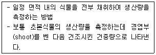
- 수확법
- 상대생장법
- 동화챔버법
- 영구방형구법
(정답률: 40%)
80. 다음 중 생태조사 시 우선조사 항목과 가장 거리가 먼 것은?
- 보편종
- 천연기념물
- 멸종위기종
- 환경부 지정 희귀종
(정답률: 54%)